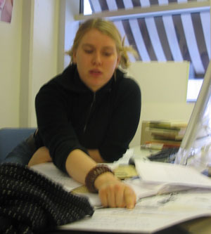

Maikki Rantala maikki.rantala@lpt.fi
Font: Solu

Monday 24 January
Intelligence of a species is all about adaptation. personal thickness, thickness of the character thickness of population person who uses the typeface is the one who creates the environment. if you have several different characters, they all gonna look the same, they are gonna inherit something from eachother.
history of type design also works as key selection, inheriting from ancestors.
characters vs. environment
Tuesday 25 January
Evolution.
Scientists side.
Nice old biology books. Russian, Polish books. Evolution/adaptation.
The different kind of speciies, all on one page. Some are extint, so they stop here.
Different way of showing that animals come from the same ancestor.

I like the breeding: when you combine a white and a black rabbit, there are different outcomes.

Round shapes.
Cells themselves, how they split all the time and get more and more complex. It's like a sentence that's growing.

Environmental variation. Different colors/shapes, depending on your ancestors or variations in environment.
What I came up with is that I have to have an environment, because some of the combinations have to succeed and some have to fail.
Combination / Environment
Human evolution itself is not very interesting, that's not good. Variation is better. Some lines die out and some get longer.
All the standard biology evolution books have these smooth landscapes. That's not the environment these fonts would like to live in.
REACTIONS
Terhi: Are you gonna make a lot of A's or just one? Lucas: while you were showing this, I got ten ideas of making fonts. It suggests a lot of ideas. The way you work is very visual and shows what you are thinking about. Type shapes, characters, made an evolution throughout their life. They didn't always look like this.
Wednesday 26 January

|
 |
There are still a lot of questions to solve: how do I use genotypes/fenotypes with the 2 ancestors to create the 16 pairs? Are these relative? Can the letters carry the extra information that is not held in their appearance but carried along in their genes? Quoting Lucas: In this project, you are God. You are the one who makes the though decisions. You can imagine God sitting at his desk, with all the papers around him, and thinking hard about how he should make all this DNA stuff. However, God had 7 days to create the world. You still have 2 ;-) |
Friday 28 January
Solu (or "Little baby got born yesterday")
Solu means The "cell" in Finnish.
Now the letters have one fixed form , but I could use ligatures too.
I'm quite happy with the way the font turned out, but there is still a lot of work to be done. Howver, I already did a lot of thinking for the next week.
Monday 31 January
I went to zoolical museum, and to the forest for most of the weekend. The snow made really nice shapes, like round hats on top of everything. I have an idea of what kind of world it could be.
I also found that the library has a book of about 1,000 pages containing the new grammar of Finland. It displays how often syllabes appear.
My first decision is that this world is gonna be finnish. I have to get the right frequency count for all of the letters so I can predict the evolution, e.g. the letter 'j' can take a lot of space, because it is always in front of "ja".
The real evolution is about the syllables and the words themselves.